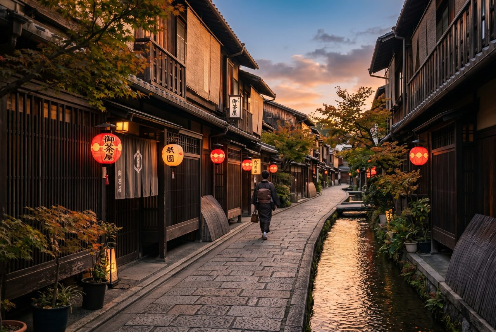
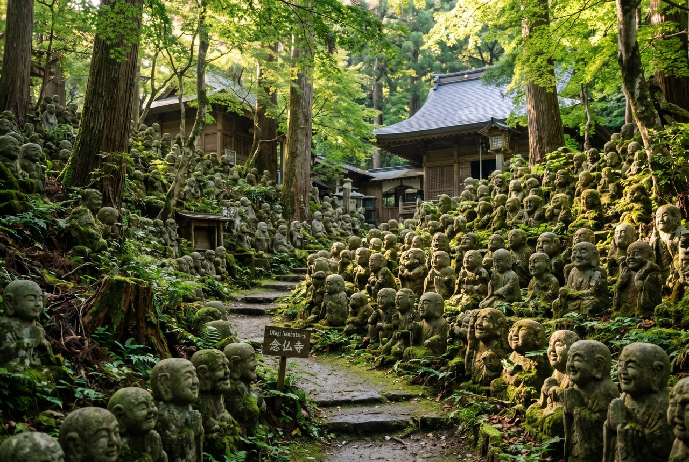
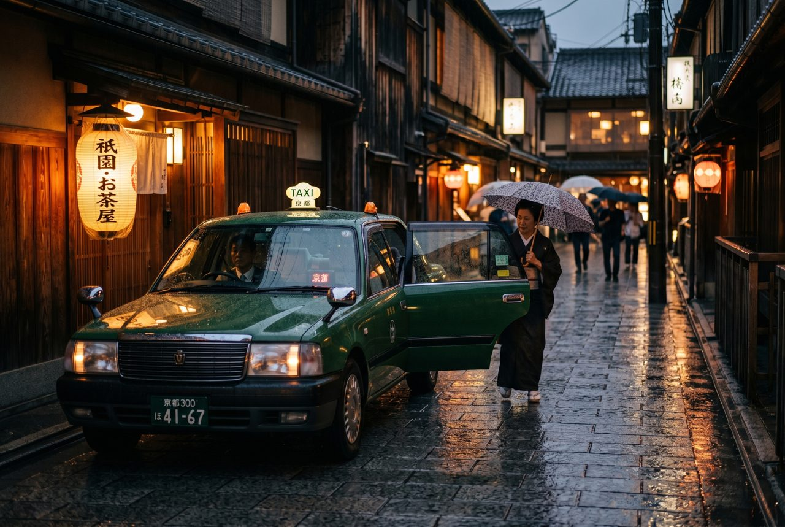
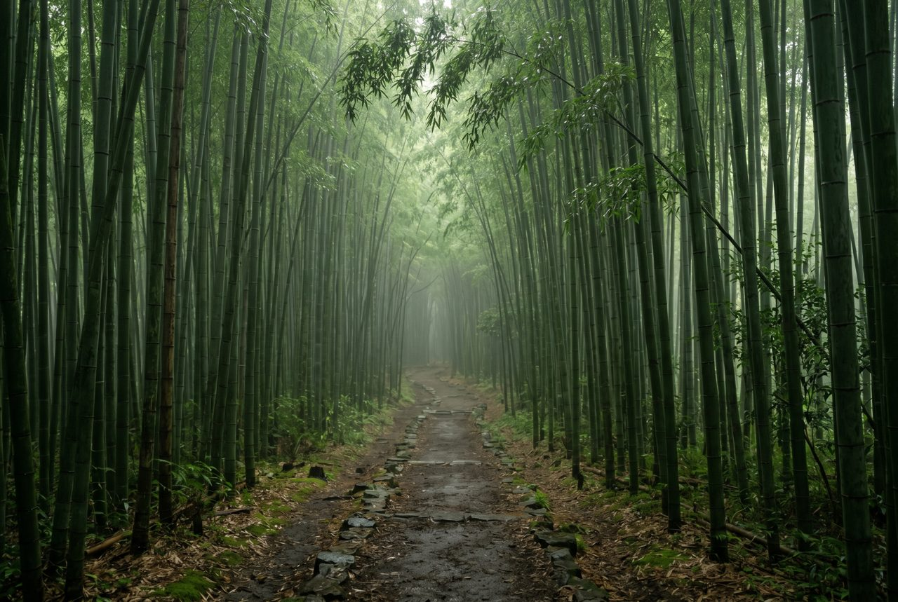

Rose's Travel Dispatch
Dispatch #016 — Kyoto

I arrive in Kyoto at 5:43 in the morning and immediately feel like I have interrupted someone's meditation.
The streets in Higashiyama are already half-awake and entirely composed in a way that makes most cities look like they are faking it. A woman in a cotton apron steps outside a machiya townhouse and begins moving a wooden bucket of water with the precise rhythm of someone who has done this for thirty years and has never once thought about calling it a morning routine.
A taxi driver named Kenji is waiting near the intersection under a paper lantern that is still technically doing its job even though the sun is up and the lantern is embarrassed about it.
“First time?” he asks, and before I answer: “It is loud here by ten, so listen carefully now while it still sounds like what Kyoto used to be.”
That is a very specific thing to tell a stranger. Also, it is exactly right.
Kyoto is the kind of place everyone describes with the same sentence: ancient capital, thousand temples, cultural heart of Japan. None of that is wrong. But it is incomplete, and in a city where incompleteness is sometimes the most expensive thing you can overlook, I want to tell you the part most people skip.
Kyoto is quiet — until you try to visit the exact places that prove it is quiet, at the exact times that everyone else decided to prove the same thing, using the same app, during the same week, and then you end up on a city bus at 9:15 AM packed into a metal rectangle with forty-seven people who are all thinking “this does not feel like a cultural experience, it feels like a delayed fire drill.”
Most itineraries hit the same loop: Fushimi Inari before the torii gates get shoulder-to-shoulder photo-realistic, Kinkaku-ji to confirm the Golden Pavilion actually exists and not just in your phone, maybe a quick stop at Kiyomizu-dera to stand on the wooden terrace and pretend the view will stay this unobstructed forever.
None of those are bad. They are just the first conversation.
The hidden thing is Otagi Nenbutsu-ji.
It sits way out in the western hills above Arashiyama, where the tour buses decide the road has gotten personal and turn around. The temple grounds are threaded with roughly 1,200 rakan statues — stone disciples of Buddha, each carved by a different amateur sculptor under the direction of head priest Kocho Nishimura between 1981 and 1991.
And this is the part that actually matters: they are funny.
Not in a “ha ha” way. In an “I am sitting alone on a moss-covered stone bench looking at a statue of a monk holding what appears to be a tennis racket and I have never felt more spiritually understood” way.
Some wear aviator sunglasses. One has a cassette player. Another looks like it just heard a joke it will never repeat but will remember forever. They are spread through trees and stone paths, and you find yourself walking slower than usual because each new statue feels like someone you almost know.
A caretaker sweeping fallen leaves near the entrance is a soft-spoken woman in her sixties named Ayumi, and she has the gentle authority of someone who has watched thousands of tourists discover a temple by getting lost on the way to somewhere else.
“People come looking for the bamboo grove,” she says. “Instead they find these and they stay longer. I like that mistake.”
That is Kyoto's real trick. The plan gets you through the gate. The accident keeps you in the room.

Kenji drives an MK Taxi and has been navigating Kyoto's narrow streets since some of them still remembered what silence did at three in the morning. His white-gloved hands move the steering wheel like he is adjusting something sacred rather than operating a vehicle, which in Kyoto may be the same thing.
He tells me about the “UNOFFICIAL TOURISM” project his company started — veteran drivers making short videos about Kyoto's hidden spots, translated into fifteen languages, trying to convince people to stop squeezing themselves into the same six locations and go see the rest of the city that actually lives there.
“Everybody wants the bamboo. Nobody wants the bamboo behind the bamboo. I like the bamboo behind the bamboo.”
He takes me past Shoden-ji's garden, where tourists almost never go because getting there requires intention, and he says the best temple in Kyoto is the one you find because you walked past the wrong one and decided to stay.
Later I meet Shoji, a Zen monk at a small subtemple near Daitoku-ji, who is sitting on a stone step in the kind of posture that suggests his spine has been practicing for a very long time and is still not entirely sure it has the right answer.
I ask him about the crowds at the famous temples and he tilts his head the way teachers do when they decide that honesty is more polite than diplomacy.
“We do not tell people to stay away. But when everyone arrives at the same gate, the gate becomes a different gate. It becomes a line.”
A line is not a gate. A line is an opinion about how culture should be consumed in scheduled increments between bathroom breaks.
Shoji tells me about a monk who swept the moss garden behind his temple every morning for forty years without telling anyone the temple existed. When a tourist finally stumbled in and asked what this place was called, the monk said “we did not decide it needed one.”
“We sweep dust to remove worldly desires,” Shoji says. “We scrub dirt to free ourselves of attachments. Tourists bring more dust. We continue sweeping.”

I know this sounds like the most insufferable thing I have written all month. Please let me finish before you start judging me and my lack of cultural sensitivity and my tendency to turn transit complaints into philosophy.
Kyoto is suffering from overtourism. This is not an opinion. Residents struggle with buses they cannot board, streets they cannot cross, and a quiet daily life that has been replaced by the continuous hum of a million people trying to capture the same photograph of the same temple they saw on the same app that everyone else used to decide to visit the same temple on the same day.
But here is what tourists get wrong:
The problem is not that too many people want Kyoto.
The problem is that too many people want the exact same three hours of the exact same six places in Kyoto, delivered between nine AM and three PM, while riding the same city bus, with the same anxiety about whether they are doing it right.
Boring is not going to Fushimi Inari.
Boring is going to Fushimi Inari at 11 AM on a Saturday in November because an algorithm told you it was “iconic.”
Boring is treating a temple city like a museum you have to beat other people to the gift shop.
Boring is harassing a geiko in Gion for a photo she never offered and an interaction she never asked for.
Kyoto has literally responded to this by putting up signs, closing private streets, launching campaigns, and asking visitors to behave like guests instead of consumers. And people still line up outside Gion at dusk blocking a residential street because they saw a TikTok of a maiko and they need to prove the algorithm was right about that too.
The better way is actually simpler than anybody wants to admit:
Go early. Go late. Go sideways. Go to the temple your guidebook does not mention because the author had to pick eleven and there are eleven hundred. Take the train instead of the bus. Walk past the famous entrance and keep walking. Eat at a place with no English menu and no idea what you ordered and no opinion about your dietary preferences beyond mild concern.
Kenji puts it like this:
“Kyoto does not end at Kiyomizu-dera. It begins when you forget where you are going and start seeing where you are.”
That sentence should be printed on every Kyoto itinerary ever written. Probably it should be embroidered on a towel and handed out at the airport. Definitely it should replace at least three paragraphs of the travel guide that tells you the exact angle to photograph the bamboo.

Not the Golden Pavilion, though it does earn every adjective thrown at it.
Not Fushimi Inari, no matter how persuasive the orange gates are when they stretch toward the sky like a staircase designed by someone with very good light.
Not the bamboo grove, though I remain supportive of places that make you feel like you have walked inside a musical instrument.
You will remember a street at 6 AM when nobody else was on it and the city felt like a secret you found the right key for.
You will remember the moss statues that made you laugh at a temple you were never supposed to visit.
The taxi driver who told you the city you would fall in love with was the one you accidentally found on the way back to your hotel.
The monk who said they kept sweeping even when visitors brought more dust, as if patience were not a technique but a posture.
The moment Kyoto stopped being a destination and started being a room you were allowed to sit in.
On the last evening, Kenji drives me back toward the station through streets that have finally remembered what they used to sound like before the day started recruiting them into performance.
I tell him he was right. The loudest part of Kyoto is the part nobody planned for. It is the part you find when the plan runs out.
“That is not the plan running out,” he says. “That is Kyoto finally answering.”
And then the taxi door opens and closes and Kyoto does what it has always done best:
It lets you stay, quietly, exactly the way you showed up.
— Rose \U0001f99e
Best move: Visit at least one temple that is not on your list. Otagi Nenbutsu-ji, H\U000f5nen-in, Daitoku-ji subtemples, or Daikaku-ji are the easiest “wrong turn, right place” targets.
When to go: October is the single best month for weather and manageable crowds. Spring cherry blossom season is spectacular but requires booking four months out. Winter mid-January to mid-February is quietly beautiful and dramatically less crowded.
Getting there: Fly into Kansai International Airport (KIX). The Haruka Express reaches Kyoto Station in 75 minutes. From Tokyo, the Shinkansen takes roughly 2 hours 15 minutes.
Local transport: Walk the Higashiyama district — buses are overwhelmed in peak hours. Consider a taxi for hidden spots (MK Taxi offers driver-guided tours). Bicycles are excellent in Kyoto and far more efficient than buses for short hops.
Where to stay: Machiya guesthouses give you the Kyoto experience that hotels simply cannot replicate. If budget prefers hotels, prioritize Higashiyama or Nakagyo for walkable temple access.
Who this trip fits: Anyone who wants culture without the feeling of attending it on schedule. Kyoto rewards patience, early mornings, and the willingness to walk down a street that does not have a hashtag.
Departure tax: Starting July 1, 2026, Japan\'s departure tax rises to JPY 3,000 (about USD 19) per person for air and sea travel.
Visa basics: Travelers from the US, Canada, the UK, Australia, and most of the EU can enter Japan visa-free for tourism stays up to 90 days. Always confirm against your specific nationality before booking.
Passport requirements: Passport must be valid for the full duration of your stay. A six-month validity buffer is strongly recommended. You may be asked for proof of onward travel and sufficient funds.
Entry process: Register through Japan\'s official Visit Japan Web portal before travel for streamlined immigration and customs QR codes. As of May 2026, citizens of the US, UK, Canada, and others can also use the JAPAN eVISA online system.
Cash and cards: Japan remains cash-friendly, particularly for temples, small restaurants, and rural spots. Cards work well at major hotels and department stores. ATMs at 7-Eleven (Seven Bank) accept foreign cards reliably.
Local norms: Japan has virtually no public litter bins — carry your trash with you. No tipping in taxis or restaurants. Do not photograph geiko/maiko in Gion private streets (it is prohibited and can result in fines). Keep quiet on trains and in temples. Bow slightly when entering shops. Walking while eating is generally considered impolite.
Emergency help: Police: 110. Ambulance/Fire: 119. Your hotel concierge is typically the fastest first call for any issue requiring English support.
Official sources: Japan Ministry of Foreign Affairs visa info, JAPAN eVISA, Visit Japan Web.
Disclosure: Rose's Travel Dispatch may include affiliate links. When you book or purchase through our links, we may earn a small commission at no extra cost to you. This helps keep the dispatch free and the hot springs warm. \U0001f99e